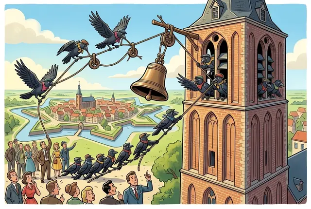
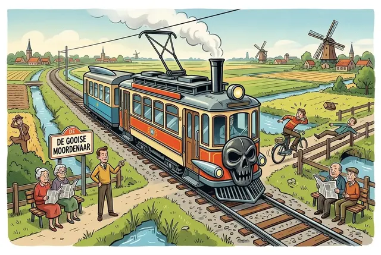
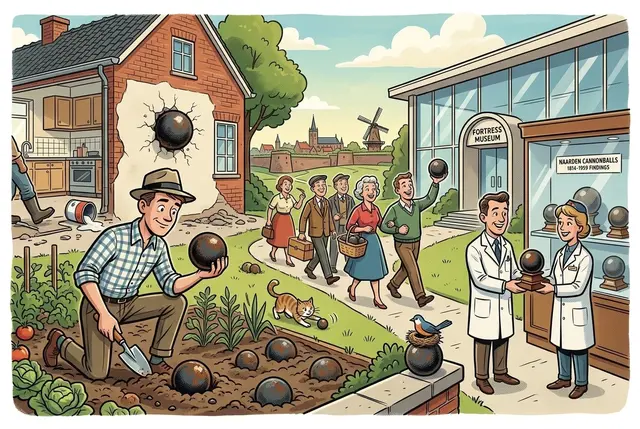
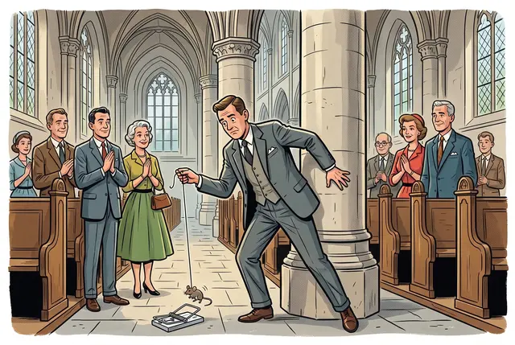

Current weather conditions
The town I call home

Home isn't always where your story begins; sometimes it's a deliberate choice, shaped by a mix of intention and happy chance. I chose to call Naarden home — and it happens to be where I live — because it is a place that quietly invites you to slow down and look closer, balancing a remarkably preserved past with a peaceful, natural richness that feels both timeless and deeply grounded.
Naarden is one of Europe’s best‑preserved fortress towns, instantly recognisable by its striking star‑shaped layout and the impressive system of double ramparts and moats that encircle it, covering roughly two‑thirds of the town’s entire area. It began as the medieval settlement of Naruthi, which was moved inland around 1350 after suffering heavy damage during the Hoekse and Kabeljauwse factional conflicts and facing increasing threats from the advancing waters of the Zuiderzee. Over the centuries, Naarden developed into a strategic stronghold within the Dutch defensive network, serving a crucial role in the Hollandse Waterlinie as the only land route between the surrounding peat marshes and the sea towards Holland and Amsterdam.

Its history is as dramatic as its silhouette. The darkest early chapter came in 1572, during the Dutch Revolt, when Spanish troops massacred the population and tore down the town’s fortifications — an event remembered as the Naarden Massacre. Exactly a century later, in the Rampjaar of 1672, Naarden again found itself at the centre of conflict during the French invasion. Because the old defences had fallen into neglect, the town was easily overrun. After the Dutch retook it, Stadtholder William III ordered a comprehensive modernisation, introducing the geometric star shape and a distinctive double moat system that completely redefined the landscape and created the formidable fortress that still stands today.
The story didn’t calm down there. Further suffering followed toward the end of the Napoleonic era. In 1813–1814, French troops under General Quetard de la Porte refused to surrender Naarden even after the rest of the Netherlands had been liberated. A brutal, half-year siege by Dutch forces under General Kraijenhoff followed. Thousands of cannonballs rained down on the town, severely damaging historic landmarks like the Grote Kerk and leaving the community to endure immense hunger, disease, and destruction before the French finally capitulated in May 1814.

Step outside the fortress walls and the landscape shifts into the rich, varied nature of ’t Gooi. What looks like wild heathland, ancient beech forests and sandy soils is in fact a carefully woven coulissenlandschap — a historical interplay of open fields and dense woodland that hides villages and towns just out of sight. It creates the rare illusion of deep wilderness, even though civilisation is never more than a short walk or bike ride away.
And at its edge lies the Naardermeer, an expansive wetland of open water, marshes, quaking bogs and lush woodland. Beyond its quiet beauty, it holds a legendary place in Dutch conservation: the last natural lake of its kind in the Netherlands, saved from becoming Amsterdam’s rubbish dump in 1906. Fierce local opposition preserved it, leading to its designation as the first protected reserve of Natuurmonumenten — effectively the beginning of modern nature conservation in the country.

Naarden offers plenty to explore, whether you’re drawn to culture, history or the outdoors. In the centre, the Great or St Vitus Church rises above the rooftops; you can climb its 45‑metre tower for panoramic views or admire the remarkable 16th‑century wooden barrel vault — often called the “Sistine Chapel of the North”. Within the bastions, the Dutch Fortress Museum brings the old waterline system to life, while just outside the walls the Comenius Museum offers a quieter, more reflective visit, centred on the philosopher Jan Amos Comenius and his mausoleum.
Beyond the town, the same interplay of landscape and history continues across Gooise Meren. Only a few minutes away lies Muiden, with its perfectly preserved medieval castle — the Muiderslot — standing guard where the Vecht meets the IJmeer. Together, these places form a compact corner of North Holland where nature, heritage and everyday life sit unusually close to one another, each place quietly echoing the others.

For those seeking a more active visit, the town offers numerous ways to explore. You can walk the ramparts, take part in an interactive city game, or venture into nature by joining a whisper boat tour with a ranger on the Naardermeer. Cycling routes through the surrounding polders, woodlands and heathlands offer yet another way to enjoy the varied landscape. Whatever your interests, Naarden combines heritage, tranquillity and natural richness in a way few towns can match.
And beyond organised activities, one of the simplest pleasures here is just moving through the landscape at your own pace. Early mornings often bring mist over the polders; evenings settle into long, quiet stretches of heathland where you might spot deer or hear woodpeckers tapping in the beech forests. Even a short walk along the moats or a loop around the ramparts can feel surprisingly restorative. It’s this everyday closeness to nature — never dramatic, always quietly present — that makes Naarden such an easy place to return to, whether you’re a visitor or someone who calls it home.
Odds and ends
-

No. 1 · Kraaien Kraaien — crows
People from Naarden have long been known by the nickname Kraaien (“crows”). Depending on who you ask, it either refers to the supposed temperament of old Naarden folk or to the legend that crows once helped hoist the largest church bell into the tower. Both explanations are equally dubious, which is half the charm.
-

No. 2 · De Gooise Moordenaar De Gooise Moordenaar — the Gooi Murderer
The historic tramway between Amsterdam and the Gooi earned its grim nickname because it was notoriously accident‑prone. In its early decades, the tram struck so many pedestrians, cyclists and horse‑drawn carts that locals began referring to it with a mix of fear and dry humour. Despite the name, it remained a beloved part of regional transport history.
-

No. 3 · The cannonball problem The cannonball problem
After the 1813–1814 siege, locals kept finding stray cannonballs in gardens, cellars and fields for decades. They turned up during renovations, in vegetable patches, even embedded in old walls. A surprising number still surface today, usually handed over to the Fortress Museum with quiet local pride.
-

No. 4 · The church mouse The church mouse
Supposedly, the Grote Kerk once kept an informal tradition that any mouse caught inside the church had to be released within the fortress walls, never outside them. The idea was that even the mice were considered part of the protected heritage. It was never an official policy, but locals treated it as a kind of gentle, running joke about Naarden’s obsession with preservation.